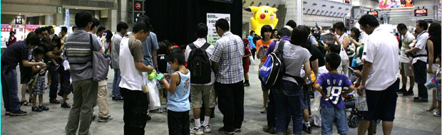
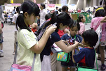
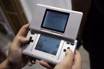
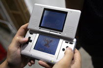

|
 |
今回も会場各地でデータのダウンロードが行えることになっています。必ずニンテンドーＤＳやゲームボーイアドバンスとポケモンソフトは持って行きましょう。ここでしかダウンロードできない、お得なデータもありますよ！
|
|

ＧＢＡ用ソフト『ポケットモンスター エメラルド』で使うことのできる特別などうぐ"ふるびたかいず"をプレゼントしてもらえちゃう！ "ふるびたかいず"を使えば、ゲーム中で「さいはてのことう」へ行くことができるとのウワサ。ぜひダウンロードをお忘れなく。
「ふしぎなおくりもの」を使い、ワイヤレス配信されている「ふしぎなカード」をまず受信。
すると、"さいはてのことう"へ行くための"ふるびたかいず"が手に入ります。
"さいはてのことう"では、野生のミュウが手に入ります。これまでミュウは様々な形で入手可能でしたが、野生のミュウと戦闘できるのはこれだけ。また、手に入れたミュウは自分が「おや」となって、「ニックネーム」をつけることができてしまうのです。これはぜひチャレンジしたいところ。
|
会場内では並んでいる時間があったり、ちょっと疲れて休憩したい時もありますよね。そんな時に大活躍なのが、会場内でダウンロードできる『ポケモン釣り大会ＤＳ』。これをダウンロードすると、ポケモンを釣ることができるミニゲームが体験できるようになり、釣ったポケモンの珍しさや重さなどが会場内ランキングで確認できるのです。また、全国ランキングもあるので、コレで熱くなっちゃう人が続出。単純なだけにハマってしまうゲームです。
これは電源を切ると再度ダウンロードが必要になりますから、一旦ゲームをやめたい人は、本体を閉じてスリープモードにするのを忘れないようにしましょう。


|
ポケモンオンフレッツオープン一周年記念プレゼントとして、ポケモン☆サンデーでお馴染みの「ソーナンス」をポケモンフェスタの各会場（ポケモンオンフレッツのブース）で手に入れることができます。特別なソーナンスなので、お得感満点。気になる人は、各会場のポケモンオンフレッツブースへ！
|
|